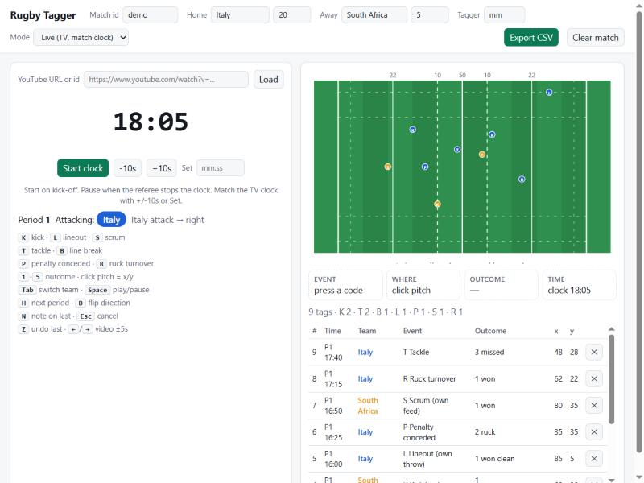

1. Game shape: Italy's form is negative in every 20-minute window
Over their last 12 Tests Italy outscored their opponents in no window. The widest gap is 20-40 minutes (-5.3 points per match). South Africa's biggest edges are 40-60 (+7.6) and 0-20 (+7.0); they score most in 60-80 (11.6 per match).
Show the numbers
| Scored | Conceded | |
|---|---|---|
| 0-20 | 3.9 | 6.2 |
| 20-40 | 4.0 | 9.3 |
| 40-60 | 4.0 | 8.3 |
| 60-80 | 3.9 | 6.4 |
Show the numbers
| Scored | Conceded | |
|---|---|---|
| 0-20 | 10.2 | 3.2 |
| 20-40 | 6.7 | 5.8 |
| 40-60 | 9.8 | 2.2 |
| 60-80 | 11.6 | 6.6 |
Italy: last 12 Tests. South Africa: 9 of their last 12 Tests (3 flagged: probable penalty tries missing from the feed). Points per match, form only, against varying opposition. Source: ESPN timelines (tries, conversions, penalties, drop goals). Script: src/analysis/scoring.py.
2. The bench: a small-sample clue for the last quarter
After their 5th substitution (on average around minute 51 for South Africa and 58 for Italy), South Africa scored 0.54 points a minute against 0.44 before. Italy's points per minute barely moved (0.20 to 0.20) but they conceded less (0.40 to 0.32).
Show the numbers
| Scored | Conceded | |
|---|---|---|
| Before 5th sub | 0.20 | 0.40 |
| After 5th sub | 0.20 | 0.32 |
Show the numbers
| Scored | Conceded | |
|---|---|---|
| Before 5th sub | 0.44 | 0.20 |
| After 5th sub | 0.54 | 0.26 |
Small sample. Only 264 (South Africa) and 269 (Italy) minutes of play sit after the 5th substitution; a single score moves these rates. The 5th substitution includes injury replacements (the feed does not say why a player came on). It is a clue, not proof that the bench drives the result. Script: src/analysis/bench.py.
2b. Discipline: a yellow card has cost Italy more
In the 10 minutes after one of their own yellow cards, Italy scored 14 and conceded 50 across 6 cards (net -6.0 per card). South Africa scored 10 and conceded 24 across 6 cards (net -2.3 per card).
Show the numbers
| Team scored | Team conceded | |
|---|---|---|
| Italy | 14 | 50 |
| South Africa | 10 | 24 |
Small sample. Six cards each. One try either way changes the picture. The window is a fixed 10 minutes of match clock after the card. Script: src/analysis/cards.py.
3. Try scorers: South Africa spread them, Italy lean on the backs
Italy's backs scored 64% of their tries and the starting forwards 18%. South Africa's starting forwards scored 26% and the backs 56%, with 18% from replacements.
Show the numbers
| Team | Tries | forwards 1-8 | backs 9-15 | fwd bench 16-20 | back bench 21-23 |
|---|---|---|---|---|---|
| Italy (22) | 22 | 4 (18%) | 14 (64%) | 1 (5%) | 3 (14%) |
| South Africa (57) | 57 | 15 (26%) | 32 (56%) | 5 (9%) | 5 (9%) |
Script: src/analysis/try_sources.py. Try build-up (lineout, scrum, kick) is not in the public feed; match-day tagging is how we plan to measure it.
4. Selection: both matchday 23s for Turin
Siya Kolisi captains. The bench is 6 forwards and 2 backs. The starting XV averages 6.2 starts in South Africa's last 12 Tests. Salmaan Moerat played none of them in our data.
Matchday 23, South Africa
| No. | Player | Role | Starts (last 12) | Tests (last 12) |
|---|---|---|---|---|
| 1 | Ox Nche | starter | 4 | 6 |
| 2 | Malcolm Marx | starter | 6 | 8 |
| 3 | Thomas du Toit | starter | 4 | 6 |
| 4 | Salmaan Moerat | starter | 0 | 0 |
| 5 | Ruan Nortje | starter | 8 | 9 |
| 6 | Siya Kolisi | starter | 7 | 7 |
| 7 | Pieter-Steph du Toit | starter | 8 | 8 |
| 8 | Jasper Wiese | starter | 8 | 9 |
| 9 | Morne van den Berg | starter | 3 | 7 |
| 10 | Sacha Feinberg-Mngomezulu | starter | 7 | 8 |
| 11 | Ethan Hooker | starter | 8 | 8 |
| 12 | Damian de Allende | starter | 8 | 8 |
| 13 | Jesse Kriel | starter | 8 | 8 |
| 14 | Kurt-Lee Arendse | starter | 6 | 6 |
| 15 | Damian Willemse | starter | 8 | 9 |
| 16 | Jan-Hendrik Wessels | bench | 1 | 6 |
| 17 | Gerhard Steenekamp | bench | 3 | 10 |
| 18 | Wilco Louw | bench | 5 | 10 |
| 19 | Lood de Jager | bench | 1 | 5 |
| 20 | Cameron Hanekom | bench | 2 | 5 |
| 21 | Paul de Villiers | bench | 5 | 5 |
| 22 | Grant Williams | bench | 2 | 5 |
| 23 | Manie Libbok | bench | 1 | 8 |
Giacomo Nicotera captains Italy (No. 2). The bench is 6 forwards and 2 backs. The starting XV averages 5.1 starts in Italy's last 12 Tests, with 10 changes to the starting XV from Italy's most recent Test in our data. Samuele Locatelli played none of them in our data; FIR lists him as a debutant (esordiente).
Matchday 23, Italy
| No. | Player | Role | Starts (last 12) | Tests (last 12) |
|---|---|---|---|---|
| 1 | Muhamed Hasa | starter | 3 | 9 |
| 2 | Giacomo Nicotera | starter | 7 | 7 |
| 3 | Simone Ferrari | starter | 7 | 8 |
| 4 | Niccolò Cannone | starter | 11 | 11 |
| 5 | Federico Ruzza | starter | 3 | 10 |
| 6 | Alessandro Ortombina | starter | 1 | 2 |
| 7 | Samuele Locatelli | starter | 0 | 0 |
| 8 | Lorenzo Cannone | starter | 10 | 10 |
| 9 | Alessandro Fusco | starter | 4 | 7 |
| 10 | Paolo Garbisi | starter | 10 | 10 |
| 11 | Monty Ioane | starter | 10 | 10 |
| 12 | Leonardo Marin | starter | 4 | 10 |
| 13 | Paolo Odogwu | starter | 1 | 3 |
| 14 | Ange Capuozzo | starter | 4 | 4 |
| 15 | Mirko Belloni | starter | 2 | 2 |
| 16 | Tommaso Di Bartolomeo | bench | 4 | 10 |
| 17 | Danilo Fischetti | bench | 10 | 12 |
| 18 | Ion Neculai | bench | 0 | 1 |
| 19 | Enoch Opoku Gyamfi | bench | 0 | 1 |
| 20 | Ross Vintcent | bench | 5 | 6 |
| 21 | Manuel Zuliani | bench | 8 | 9 |
| 22 | Stephen Varney | bench | 4 | 6 |
| 23 | Tommaso Allan | bench | 1 | 6 |
Sources: South Africa: Springbok team announcement of 2 Nov 2026, jersey numbers as listed by SABC Sport and Rugby365 (in docs/official_teams.json). Script: src/analysis/selection.py. "Starts" and "Tests" count the last 12 Tests in our data, not career caps. Italy: FIR team announcement of 5 Nov 2026 (federugby.it), cross-checked against OnRugby. Names are matched to the feed ignoring accents and hyphens.
Context: nineteen Tests, one result
Show the numbers
| Year | SA margin (SA minus Italy) |
|---|---|
| 1995 | +19 |
| 1997 | +31 |
| 1999 | +71 |
| 1999 | +101 |
| 2001 | +46 |
| 2001 | +28 |
| 2008 | +26 |
| 2009 | +22 |
| 2010 | +16 |
| 2010 | +44 |
| 2013 | +34 |
| 2014 | +16 |
| 2016 | -2 |
| 2017 | +29 |
| 2019 | +46 |
| 2022 | +42 |
| 2025 | +18 |
| 2025 | +45 |
| 2025 | +18 |
Source: Wikipedia, History of rugby union matches between Italy and South Africa (CC BY-SA); totals checked against its summary (Italy 233, South Africa 883 points). Script: src/analysis/h2h_trend.py.
What we couldn't measure
- Possession, territory and set-piece team stats. No reliable public source for past Tests: the match-centre pages we tried returned an error or showed no past-match stats, so we dropped them rather than guess.
- The referee. One news report names Eoghan Cross (Ireland) for this match; we found no second source and no verified card or penalty record for his Tests. Left out until World Rugby's confirmation and a reliable record.
- Penalty tries. Three South Africa Tests are short by exactly 7 points in the data feed, probably penalty tries it omits. Those three are left out of the period, bench and card charts, and listed on the sources page.
- Why moves started. Kick-chase, lineout and scrum origins need film. That is what the tagger is for, from Saturday.
- Opposition quality. These are each team's own recent Tests against different opponents, not a head-to-head matchup.
Review: after full time
How each area actually played out, using the same scripts as the Dossier on the match timeline. Dossier patterns are form-window observations, not forecasts; each is reported as held or not held, whichever way it went.
Full time: Italy 7, South Africa 66. Half time: Italy 0, South Africa 45.
Score flow
Show the numbers
| Minute | Italy | South Africa |
|---|---|---|
| 5.3 | 3 | |
| 8.1 | 8 | |
| 9.1 | 10 | |
| 15.4 | 15 | |
| 16 | 17 | |
| 19.4 | 22 | |
| 20.3 | 24 | |
| 22.4 | 29 | |
| 23.3 | 31 | |
| 24.9 | 36 | |
| 25.7 | 38 | |
| 32.3 | 43 | |
| 33.3 | 45 | |
| 49.7 | 50 | |
| 50.4 | 52 | |
| 61 | 5 | |
| 62 | 7 | |
| 72.2 | 57 | |
| 73 | 59 | |
| 80.2 | 64 | |
| 80.8 | 66 |
Windows against the Dossier
| Window | Italy, this match | Italy, form | South Africa, this match | South Africa, form |
|---|---|---|---|---|
| 0-20 | -22 | -2.3 | +22 | +7.0 |
| 20-40 | -23 | -5.3 | +23 | +0.9 |
| 40-60 | -7 | -4.3 | +7 | +7.6 |
| 60-80 | -7 | -2.5 | +7 | +5.0 |
Bench impact
Show the numbers
| Scored | Conceded | |
|---|---|---|
| Before 5th sub | 0.00 | 1.26 |
| After 5th sub | 0.15 | 0.47 |
Show the numbers
| Scored | Conceded | |
|---|---|---|
| Before 5th sub | 0.99 | 0.00 |
| After 5th sub | 0.60 | 0.20 |
Discipline
| Team | Yellow | Red | Yellow at | Scored after | Conceded after |
|---|---|---|---|---|---|
| Italy | 1 | 0 | 30' | 0 | 7 |
| South Africa | 0 | 0 | - | 0 | 0 |
Dossier patterns, checked
- Held: Italy were outscored on average in every 20-minute window of their recent Tests. Italy net points by window: 0-20 -22, 20-40 -23, 40-60 -7, 60-80 -7.
- Did not hold: South Africa scored faster after their 5th substitution. South Africa scored 0.987/min before their 5th sub (min 45.6) and 0.596/min after.
- No basis: Italy's yellow cards cost more than South Africa's. Only one side had a yellow (Italy 1, South Africa 0): net after it Italy -7, South Africa +0; no like-for-like comparison.
Tagged events
Awaiting the owner's film tags (kicks, lineouts, scrums, line breaks, with clips).
How we built it
A small analysis department of Claude Code subagents on one 2017 laptop (i5, 16 GB, no GPU), copying the methods of professional analysts from public sources only. No inside access to anyone and no connection to any team: the seats below are modelled on roles that have been described publicly.
The department
Head analyst · the "Lewis" seat
Plans the dossier, decides which findings matter and writes the story. Runs on the strongest model, once per deliverable.
Set-piece analyst · the "Sullivan" seat
Scrums, lineouts, mauls, restarts. Waits for tagged film: the public feed has no set-piece data.
Attack analyst · the "Weyer" seat
Backline shape, try sources, line breaks, the kicking game.
Defence and discipline analyst
Turnovers, penalties, cards. Built the yellow-card cost metric on this page.
Data engineer
Fetches each match once, caches it, loads SQLite, reconciles every match to the final score.
Film coder
Owns the tagger and the tagging import. Claude can't watch video, so a human watches and Claude structures what was seen.
Viz builder
Charts, this page and the slides. Every number is computed by a script and formatted into the page, not typed.
Reviewer
Fact-checks every number against its script and source, and checks rights and tone. Nobody publishes their own work.
The pipeline
Film, then tagged events, then stats, then insight, then visuals. Today the stats half runs on ESPN timelines and lineups for each side's last 12 Tests, cached once on disk and loaded into SQLite, plus Wikipedia for the head-to-head. Every match is checked against the final score; mismatches are flagged, not hidden.
Film: how it works without downloading video
We never download or re-upload broadcast or YouTube video. I watch live or on official highlights and tag events in our own tagger: a local web page with a clickable pitch and hotkeys (K kick, L lineout, S scrum, T tackle, B line break, P penalty, R ruck turnover). It runs on a clock I keep in step with the TV, or on an embedded YouTube highlight, and exports a CSV of event, outcome and x/y position that loads into the same database as the feed. Clips are linked as official embeds with start times.

What we couldn't measure
- Possession, territory and set-piece team stats. No reliable public source for past Tests: the match-centre pages we tried returned an error or showed no past-match stats, so we dropped them rather than guess.
- The referee. One news report names Eoghan Cross (Ireland) for this match; we found no second source and no verified card or penalty record for his Tests. Left out until World Rugby's confirmation and a reliable record.
- Penalty tries. Three South Africa Tests are short by exactly 7 points in the data feed, probably penalty tries it omits. Those three are left out of the period, bench and card charts, and listed on the sources page.
- Why moves started. Kick-chase, lineout and scrum origins need film. That is what the tagger is for, from Saturday.
- Opposition quality. These are each team's own recent Tests against different opponents, not a head-to-head matchup.
Lessons so far
- The public feed's starter and captain flags came back empty; starters are inferred from jersey numbers.
- Three timelines were short by exactly 7 points, a missing penalty try. We flagged them and kept them out of the timeline metrics instead of patching numbers.
- Two team-stats sources failed. Dropping a metric beat guessing it.